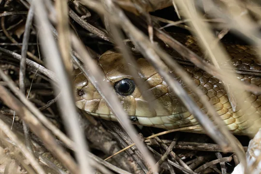
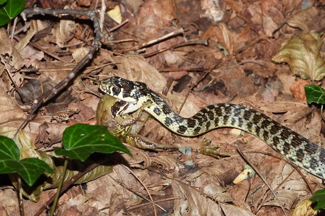

Snakes of Monaco
3 living snake species are recorded in Monaco in SnakeList: 1 venomous and 2 non-venomous, from 2 families.
- 3living species
- 1venomous
- 2non-venomous
- 2families
Danger to people
- 0harmful to people
- 0dangerously venomous
- 1mildly venomous
- 0giant constrictors
- 2harmless
Harmful = dangerously venomous + giant constrictors. Harmless = not venomous and not a giant constrictor. Mildly venomous snakes have no serious bites to people documented. Any snake can bite.
These totals count the unique living snake species SnakeList records in Monaco. A species counts if it is recorded anywhere in the country, so not every snake lives in every part of it.
In SnakeList’s checklist filters
How many of the 3 living species here each filter in the SnakeList app picks out.
Snake family2 types, 2 families
Type
- 2Colubrid
- 1Other
Family
- 2Colubridae
- 1Psammophiidae
Habitats8 habitat groups
- 3Forests & woodlands
- 3Savannas & grasslands
- 3Shrublands & heath
- 3Mountains & rocks
- 1Underground & forest floor
- 3Coasts & sea
- 2Around people
- 3Europe & Mediterranean
Habitats are estimated from where each snake is recorded and what kind of snake it is, as in the app; a snake can count in several.
Characteristics1 venomous, 1 constrictors
- 1venomous
- 2non-venomous
- 1constrictors
- 0non-constrictors
- 2constriction not documented
- 1snake eaters
Constrictor and Non-constrictor count only snakes whose family or genus is documented as constricting or not; the rest are not documented.
Other filters0 popular, 0 rare
- 0popular
- 3uncommon
- 3exotic
- 1invasive
- 3common
- 0rare
- 0no photos
- 0extinct
- 0harmful
- 2low risk
Species
Showing 3 species

Ladder SnakeZamenis scalaris Montpellier SnakeMalpolon monspessulanus
Montpellier SnakeMalpolon monspessulanus
Western Whip SnakeHierophis viridiflavus
No snakes in Monaco match.